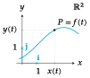
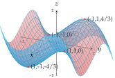

Several variables differentiable calculus Vector functions of a single real variable Definition - Vector function of a single real variable. A vector function of a single real variable or vector field of a scalar variable is a function that maps every scalar value $t\in D\subseteq \mathbb{R}$ into a vector $(x_1(t),\ldots,x_n(t))$ in $\mathbb{R}^n$: $$ \begin{array}{rccl} f: & \mathbb{R} & \longrightarrow & \mathbb{R}^n\newline & t & \longrightarrow & (x_1(t),\ldots, x_n(t)) \end{array} $$ where $x_i(t)$, $i=1,\ldots,n$, are real function of a single real variable known as coordinate functions. The most common vector field of scalar variable are in the the real plane $\mathbb{R}^2$, where usually they are represented as $$f(t)=x(t)\mathbf{i}+y(t)\mathbf{j},$$ and in the real space $\mathbb{R}^3$, where usually they are represented as $$f(t)=x(t)\mathbf{i}+y(t)\mathbf{j}+z(t)\mathbf{k},$$ Graphic representation of vector fields The graphic representation of a vector field in $\mathbb{R}^2$ is a trajectory in the real plane.  The graphic representation of a vector field in $\mathbb{R}^3$ is a trajectory in the real space. Derivative of a vector field The concept of derivative as the limit of the average rate of change of a function can be extended easily to vector fields. Definition - Derivative of a vectorial field. A vectorial field $f(t)=(x_1(t),\ldots,x_n(t))$ is differentiable at a point $t=a$ if the limit $$\lim_{\Delta t\rightarrow 0} \frac{f(a+\Delta t)-f(a)}{\Delta t}.$$ exists. In such a case, the value of the limit is known as the derivative of the vector field at $a$, and it is written $f’(a)$. Many properties of real functions of a single real variable can be extended to vector fields through its component functions. Thus, for instance, the derivative of a vector field can be computed from the derivatives of its component functions. Theorem. Given a vector field $f(t)=(x_1(t),\ldots,x_n(t))$, if $x_i(t)$ is differentiable at $t=a$ for all $i=1,\ldots,n$, then $f$ is differentiable at $a$ and its derivative is $$f’(a)=(x_1’(a),\ldots,x_n’(a))$$ Proof The proof for a vectorial field in $\mathbb{R}^2$ is easy. $$\begin{aligned} f’(a)&=\lim_{\Delta t\rightarrow 0} \frac{f(a+\Delta t)-f(a)}{\Delta t} = \lim_{\Delta t\rightarrow 0} \frac{(x(a+\Delta t),y(a+\Delta t))-(x(a),y(a))}{\Delta t} =\newline &= \lim_{\Delta t\rightarrow 0} \left(\frac{x(a+\Delta t)-x(a)}{\Delta t},\frac{y(a+\Delta t)-y(a)}{\Delta t}\right) =\newline &= \left(\lim_{\Delta t\rightarrow 0}\frac{x(a+\Delta t)-x(a)}{\Delta t},\lim_{\Delta t\rightarrow 0}\frac{y(a+\Delta t)-y(a)}{\Delta t}\right) = (x’(a),y’(a)). \end{aligned} $$ Kinematics: Curvilinear motion The notion of derivative as a velocity along a trajectory in the real line can be generalized to a trajectory in any euclidean space $\mathbb{R}^n$. In case of a two dimensional space $\mathbb{R}^2$, if $f(t)$ describes the position of a moving object in the real plane at any time $t$, taking as reference the coordinates origin $O$ and the unitary vectors ${\mathbf{i}=(1,0),\mathbf{j}=(0,1)}$, we can represent the position of the moving object $P$ at every moment $t$ with a vector $\vec{OP}=x(t)\mathbf{i}+y(t)\mathbf{j}$, where the coordinates $$ \begin{cases} x=x(t)\newline y=y(t) \end{cases} \quad t\in \mbox{Dom}(f) $$ are the coordinate functions of $f$. In this context the derivative of a trajectory $f’(a)=(x_1’(a),\ldots,x_n’(a))$ is the velocity vector of the trajectory $f$ at moment $t=a$. Example. Given the trajectory $f(t) = (\cos t,\sin t)$, $t\in \mathbb{R}$, whose image is the unit circumference centred in the coordinate origin, its coordinate functions are $x(t) = \cos t$, $y(t) = \sin t$, $t\in \mathbb{R}$, and its velocity is $$\mathbf{v}=f’(t)=(x’(t),y’(t))=(-\sin t, \cos t).$$ In the moment $t=\pi/4$, the object is in position $f(\pi/4) = (\cos(\pi/4),\sin(\pi/4)) =(\sqrt{2}/2,\sqrt{2}/2)$ and it is moving with a velocity $\mathbf{v}=f’(\pi/4)=(-\sin(\pi/4),\cos(\pi/4))=(-\sqrt{2}/2,\sqrt{2}/2)$. Observe that the module of the velocity vector is always 1 as $\vert\mathbf{v}\vert=\sqrt{(-\sin t)^2+(\cos t)^2}=1$. Tangent line to a trajectory Tangent line to a trajectory in the plane Vectorial equation Given a trajectory $f(t)$ in the real plane, the vectors that are parallel to the velocity $\mathbf{v}$ at a moment $a$ are called tangent vectors to the trajectory $f$ at the moment $a$, and the line passing through $P=f(a)$ directed by $\mathbf{v}$ is the tangent line to the graph of $f$ at the moment $a$. Definition - Tangent line to a trajectory. Given a trajectory $f(t)$ in the real plane $\mathbb{R}^2$, the tangent line to to the graph of $f$ at $a$ is the line with equation $$ \begin{aligned} l:(x,y) &= f(a)+tf’(a) = (x(a),y(a))+t(x’(a),y’(a))\newline & = (x(a)+tx’(a),y(a)+ty’(a)). \end{aligned} $$ Example. We have seen that for the trajectory $f(t) = (\cos t,\sin t)$, $t\in \mathbb{R}$, whose image is the unit circumference centred at the coordinate origin, the object position at the moment $t=\pi/4$ is $f(\pi/4)=(\sqrt{2}/2,\sqrt{2}/2)$ and its velocity $\mathbf{v}=(-\sqrt{2}/2,\sqrt{2}/2)$. Thus the equation of the tangent line to $f$ at that moment is $$ \begin{aligned} l: (x,y) & = f(\pi/4)+t\mathbf{v} = \left(\frac{\sqrt{2}}{2},\frac{\sqrt{2}}{2}\right)+t\left(\frac{-\sqrt{2}}{2},\frac{\sqrt{2}}{2}\right) =\newline & =\left(\frac{\sqrt{2}}{2}-t\frac{\sqrt{2}}{2},\frac{\sqrt{2}}{2}+t\frac{\sqrt{2}}{2}\right). \end{aligned} $$ Cartesian and point-slope equations From the vectorial equation of the tangent to a trajectory $f(t)$ at the moment $t=a$ we can get the coordinate functions $$ \begin{cases} x=x(a)+tx’(a)\newline y=y(a)+ty’(a) \end{cases} \quad t\in \mathbb{R}, $$ and solving for $t$ and equalling both equations we get the Cartesian equation of the tangent $$\frac{x-x(a)}{x’(a)}=\frac{y-y(a)}{y’(a)},$$ if $x’(a)\neq 0$ and $y’(a)\neq 0$. From this equation it is easy to get the point-slope equation of the tangent $$y-y(a)=\frac{y’(a)}{x’(a)}(x-x(a)).$$ Example. Using the vectorial equation of the tangent of the previous example $$l: (x,y)=\left(\frac{\sqrt{2}}{2}-t\frac{\sqrt{2}}{2},\frac{\sqrt{2}}{2}+t\frac{\sqrt{2}}{2}\right),$$ its Cartesian equation is $$\frac{x-\sqrt{2}/2}{-\sqrt{2}/2} = \frac{y-\sqrt{2}/2}{\sqrt{2}/2}$$ and the point-slope equation is $$y-\sqrt{2}/2 = \frac{-\sqrt{2}/2}{\sqrt{2}/2}(x-\sqrt{2}/2) \Rightarrow y=-x+\sqrt{2}.$$ Normal line to a trajectory in the plane We have seen that the tangent line to a trajectory $f(t)$ at $a$ is the line passing through the point $P=f(a)$ directed by the velocity vector $\mathbf{v}=f’(a)=(x’(a),y’(a))$. If we take as direction vector a vector orthogonal to $\mathbf{v}$, we get another line that is known as normal line to the trajectory. Definition - Normal line to a trajectory. Given a trajectory $f(t)$ in the real plane $\mathbb{R}^2$, the normal line to the graph of $f$ at moment $t=a$ is the line with equation $$l: (x,y)=(x(a),y(a))+t(y’(a),-x’(a)) = (x(a)+ty’(a),y(a)-tx’(a)).$$ The Cartesian equation is $$\frac{x-x(a)}{y’(a)} = \frac{y-y(a)}{-x’(a)},$$ and the point-slope equation is $$y-y(a) = \frac{-x’(a)}{y’(a)}(x-x(a)).$$ The normal line is always perpendicular to the tangent line as their direction vectors are orthogonal. Example. Considering again the trajectory of the unit circumference $f(t) = (\cos t,\sin t)$, $t\in \mathbb{R}$, the normal line to the graph of $f$ at moment $t=\pi/4$ is $$ \begin{aligned} l: (x,y)&=(\cos(\pi/2),\sin(\pi/2))+t(\cos(\pi/2),\sin(\pi/2)) =\newline &= \left(\frac{\sqrt{2}}{2},\frac{\sqrt{2}}{2}\right)+t\left(\frac{\sqrt{2}}{2},\frac{\sqrt{2}}{2}\right) =\left(\frac{\sqrt{2}}{2}+t\frac{\sqrt{2}}{2},\frac{\sqrt{2}}{2}+t\frac{\sqrt{2}}{2}\right), \end{aligned} $$ the Cartesian equation is $$\frac{x-\sqrt{2}/2}{\sqrt{2}/2} = \frac{y-\sqrt{2}/2}{\sqrt{2}/2},$$ and the point-slope equation is $$y-\sqrt{2}/2 = \frac{\sqrt{2}/2}{\sqrt{2}/2}(x-\sqrt{2}/2) \Rightarrow y=x.$$ Tangent and normal lines to a function A particular case of tangent and normal lines to a trajectory are the tangent and normal lines to a function of one real variable. For every function $y=f(x)$, the trajectory that trace its graph is $$g(x) = (x,f(x)) \quad x\in \mathbb{R},$$ and its velocity is $$g’(x) = (1,f’(x)),$$ so that the tangent line to $g$ at the moment $a$ is $$\frac{x-a}{1} = \frac{y-f(a)}{f’(a)} \Rightarrow y-f(a) = f’(a)(x-a),$$ and the normal line is $$\frac{x-a}{f’(a)} = \frac{y-f(a)}{-1} \Rightarrow y-f(a) = \frac{-1}{f’(a)}(x-a).$$ Example. Given the function $y=x^2$, the trajectory that traces its graph is $g(x)=(x,x^2)$ and its velocity is $g’(x)=(1,2x)$. At the moment $x=1$ the trajectory passes through the point $(1,1)$ with a velocity $(1,2)$. Thus, the tangent line at that moment is $$\frac{x-1}{1} = \frac{y-1}{2} \Rightarrow y-1 = 2(x-1) \Rightarrow y = 2x-1,$$ and the normal line is $$\frac{x-1}{2} = \frac{y-1}{-1} \Rightarrow y-1 = \frac{-1}{2}(x-1) \Rightarrow y = \frac{-x}{2}+\frac{3}{2}.$$ Tangent line to a trajectory in the space The concept of tangent line to a trajectory can be easily extended from the real plane to the three-dimensional space $\mathbb{R}^3$. If $f(t)=(x(t),y(t),z(t))$, $t\in \mathbb{R}$, is a trajectory in the real space $\mathbb{R}^3$, then at the moment $a$, the moving object that follows this trajectory will be at the position $P=(x(a),y(a),z(a))$ with a velocity $\mathbf{v}=f’(t)=(x’(t),y’(t),z’(t))$. Thus, the tangent line to $f$ at this moment have the following vectorial equation $$ \begin{aligned} l&: (x,y,z)=(x(a),y(a),z(a))+t(x’(a),y’(a),z’(a)) =\newline &= (x(a)+tx’(a),y(a)+ty’(a),z(a)+tz’(a)), \end{aligned} $$ and the Cartesian equations are $$\frac{x-x(a)}{x’(a)}=\frac{y-y(a)}{y’(a)}=\frac{z-z(a)}{z’(a)},$$ provided that $x’(a)\neq 0$, $y’(a)\neq 0$ y $z’(a)\neq 0$. Example. Given the trajectory $f(t)=(\cos t, \sin t, t)$, $t\in \mathbb{R}$ in the real space, at the moment $t=\pi/2$ the trajectory passes through the point $$f(\pi/2)=(\cos(\pi/2),\sin(\pi/2),\pi/2)=(0,1,\pi/2),$$ with velocity $$\mathbf{v}=f’(\pi/2)=(-\sin(\pi/2),\cos(\pi/2), 1)=(-1,0,1),$$ and the tangent line to the graph of $f$ at that moment is $$l:(x,y,z)=(0,1,\pi/2)+t(-1,0,1) = (-t,1,t+\pi/2).$$ Interactive Example Normal plane to a trajectory in the space In the three-dimensional space $\mathbb{R}^3$, the normal line to a trajectory is not unique. There are an infinite number of normal lines and all of them are in the normal plane. If $f(t)=(x(t),y(t),z(t))$, $t\in \mathbb{R}$, is a trajectory in the real space $\mathbb{R}^3$, then at the moment $a$, the moving object that follows this trajectory will be at the position $P=(x(a),y(a),z(a))$ with a velocity $\mathbf{v}=f’(t)=(x’(t),y’(t),z’(t))$. Thus, using the velocity vector as normal vector the normal plane to $f$ at this moment have the following vectorial equation $$ \begin{aligned} \Pi &: (x-x(a),y-y(a),z-z(a))(x’(a),y’(a),z’(a)) = 0\newline &= x’(a)(x-x(a))+y’(a)(y-y(a))+z’(a)(z-z(a))=0. \end{aligned} $$ Example. For the trajectory of the previous example $f(t)=(\cos t, \sin t, t)$, $t\in \mathbb{R}$, at the moment $t=\pi/2$ the trajectory passes through the point $$f(\pi/2)=(\cos(\pi/2),\sin(\pi/2),\pi/2)=(0,1,\pi/2),$$ with velocity $$\mathbf{v}=f’(\pi/2)=(-\sin(\pi/2),\cos(\pi/2), 1)=(-1,0,1),$$ and normal plane to the graph of $f$ at that moment is $$\Pi:\left(x-0,y-1,z-\frac{\pi}{2}\right)(-1,0,1) =0 \Leftrightarrow -x+z-\frac{\pi}{2}=0.$$ Interactive Example Functions of several variables A lot of problems in Geometry, Physics, Chemistry, Biology, etc. involve a variable that depend on two or more variables: The area of a triangle depends on two variables that are the base and height lengths. The volume of a perfect gas depends on two variables that are the pressure and the temperature. The way travelled by an object free falling depends on a lot of variables: the time, the area of the cross section of the object, the latitude and longitude of the object, the height above the sea level, the air pressure, the air temperature, the speed of wind, etc. These dependencies are expressed with functions of several variables. Definition - Functions of several real variables. A function of $n$ real variables or a scalar field from a set $A_1\times \cdots \times A_n\subseteq \mathbb{R}^n$ in a set $B\subseteq \mathbb{R}$, is a relation that maps any tuple $(a_1,\ldots,a_n)\in A_1\times \cdots\times A_n$ into a unique element of $B$, denoted by $f(a_1,\ldots,a_n)$, that is knwon as the image of $(a_1,\ldots,a_n)$ by $f$. $$ \begin{array}{lccc} f: & A_1\times\cdots\times A_n & \longrightarrow & B\newline &(a_1,\ldots,a_n) & \longrightarrow & f(a_1,\ldots,a_n) \end{array} $$ The area of a triangle is a real function of two real variables $$f(x,y)=\frac{xy}{2}.$$ The volume of a perfect gas is a real function of two real variables $$v=f(t,p)=\frac{nRt}{p},\quad \mbox{with $n$ and $R$ constants.}$$ Graph of a function of two variables The graph of a function of two variables $f(x,y)$ is a surface in the real space $\mathbb{R}^3$ where every point of the surface has coordinates $(x,y,z)$, with $z=f(x,y)$. Example. The function $f(x,y)=\dfrac{xy}{2}$ that measures the area of a triangle of base $x$ and height $y$ has the graph below. The function $\displaystyle f(x,y)=\frac{\sin(x^2+y^2)}{\sqrt{x^2+y^2}}$ has the peculiar graph below. Level set of a scalar field Definition - Level set Given a scalar field $f:\mathbb{R}^n\rightarrow \mathbb{R}$, the level set $c$ of $f$ is the set $$C_{f,c}={(x_1,\ldots,x_n): f(x_1,\ldots,x_n)=c},$$ that is, a set where the function takes on the constant value $c$. Example. Given the scalar field $f(x,y)=x^2+y^2$ and the point $P=(1,1)$, the level set of $f$ that includes $P$ is $$C_{f,2} = {(x,y): f(x,y)=f(1,1)=2} = {(x,y): x^2+y^2=2},$$ that is the circumference of radius $\sqrt{2}$ centred at the origin. Level sets are common in applications like topographic maps, where the level curves correspond to points with the same height above the sea level, and weather maps (isobars), where level curves correspond to points with the same atmospheric pressure. Partial functions Definition - Partial function. Given a scalar field $f:\mathbb{R}^n\rightarrow \mathbb{R}$, an $i$-th partial function of $f$ is any function $f_i:\mathbb{R}\rightarrow \mathbb{R}$ that results of substituting all the variables of $f$ by constants, except the $i$-th variable, that is: $$f_i(x)=f(c_1,\ldots,c_{i-1},x,c_{i+1},\ldots,c_{n}),$$ with $c_j$ $(j=1,\ldots, n,\ j\neq i)$ constants. Example. If we take the function that measures the area of a triangle $$f(x,y)=\frac{xy}{2},$$ and set the value of the base to $x=c$, then we the area of the triangle depends only of the height, and $f$ becomes a function of one variable, that is the partial function $$f_1(y)=f(c,y)=\frac{cy}{2},\quad \mbox{with $c$ constant}.$$ Partial derivative notion Variation of a function with respect to a variable We can measure the variation of a scalar field with respect to each of its variables in the same way that we measured the variation of a one-variable function. Let $z=f(x,y)$ be a scalar field of $\mathbb{R}^2$. If we are at point $(x_0,y_0)$ and we increase the value of $x$ a quantity $\Delta x$, then we move in the direction of the $x$-axis from the point $(x_0,y_0)$ to the point $(x_0+\Delta x,y_0)$, and the variation of the function is $$\Delta z=f(x_0+\Delta x,y_0)-f (x_0,y_0).$$ Thus, the rate of change of the function with respect to $x$ along the interval $[x_0,x_0+\Delta x]$ is given by the quotient $$\frac{\Delta z}{\Delta x}=\frac{f(x_0+\Delta x,y_0)-f(x_0,y_0)}{\Delta x}.$$ Instantaneous rate of change of a scalar field with respect to a variable If instead o measuring the rate of change in an interval, we measure the rate of change in a point, that is, when $\Delta x$ approaches 0, then we get the instantaneous rate of change that is the partial derivative with respect to $x$. $$\lim_{\Delta x\rightarrow 0}\frac{\Delta z}{\Delta x}=\lim_{\Delta x \rightarrow 0}\frac{f(x_0+\Delta x,y_0)-f(x_0,y_0)}{\Delta x}.$$ The value of this limit, if exists, it is known as the partial derivative of $f$ with respect to the variable $x$ at the point $(x_0,y_0)$; it is written as $$\frac{\partial f}{\partial x}(x_0,y_0).$$ This partial derivative measures the instantaneous rate of change of $f$ at the point $P=(x_0,y_0)$ when $P$ moves in the $x$-axis direction. Geometric interpretation of partial derivatives Geometrically, a two-variable function $z=f(x,y)$ defines a surface. If we cut this surface with a plane of equation $y=y_0$ (that is, the plane where $y$ is the constant $y_0$) the intersection is a curve, and the partial derivative of $f$ with respect to to $x$ at $(x_0,y_0)$ is the slope of the tangent line to that curve at $x=x_0$. Interactive Example Partial derivative The concept of partial derivative can be extended easily from two-variable function to $n$-variables functions. Definition - Partial derivative. Given a $n$-variables function $f(x_1,\ldots,x_n)$, $f$ is partially differentiable with respect to the variable $x_i$ at the point $a=(a_1,\ldots,a_n)$ if exists the limit $$\lim_{\Delta x_i\rightarrow 0} \frac{f(a_1,\ldots,a_{i-1},a_i+\Delta x_i,a_{i+1},\ldots,a_n)-f(a_1,\ldots,a_{i-1},a_i,a_{i+1},\ldots,a_n)} {h}.$$ In such a case, the value of the limit is known as partial derivative of $f$ with respect to $x_i$ at $a$; it is denoted $$f’_{x_i}(a)=\frac{\partial f}{\partial x_i}(a).$$ Remark. The definition of derivative for one-variable functions is a particular case of this definition for $n=1$. Partial derivatives computation When we measure the variation of $f$ with respect to a variable $x_i$ at the point $a=(a_1,\ldots,a_n)$, the other variables remain constant. Thus, if we can consider the $i$-th partial function $$f_i(x_i)=f(a_1,\ldots,a_{i-1},x_i,a_{i+1},\ldots,a_n),$$ the partial derivative of $f$ with respect to $x_i$ can be computed differentiating this function: $$\frac{\partial f}{\partial x_i}(a)=f_i’(a_i).$$ To differentiate partially $f(x_1,\ldots,x_n)$ with respect to the variable $x_i$, you have to differentiate $f$ as a function of the variable $x_i$, considering the other variables as constants. Example of a perfect gas. Consider the function that measures the volume of a perfect gas $$v(t,p)=\frac{nRt}{p},$$ where $t$ is the temperature, $p$ the pressure and $n$ and $R$ are constants. The instantaneous rate of change of the volume with respect to the pressure is the partial derivative of $v$ with respect to $p$. To compute this derivative we have to think in $t$ as a constant and differentiate $v$ as if the unique variable was $p$: $$\frac{\partial v}{\partial p}(t,p)=\frac{d}{dp}\left(\frac{nRt}{p}\right)_{\mbox{$t=$cst}}=\frac{-nRt}{p^2}.$$ In the same way, the instantaneous rate of change of the volume with respect to the temperature is the partial derivative of $v$ with respect to $t$: $$\frac{\partial v}{\partial t}(t,p)=\frac{d}{dt}\left(\frac{nRt}{p}\right)_{\mbox{$p=$cst}}=\frac{nR}{p}.$$ Gradient Definition - Gradient. Given a scalar field $f(x_1,\ldots,x_n)$, the gradient of $f$, denoted by $\nabla f$, is a function that maps every point $a=(a_1,\ldots,a_n)$ to a vector with coordinates the partial derivatives of $f$ at $a$, $$\nabla f(a)=\left(\frac{\partial f}{\partial x_1}(a),\ldots,\frac{\partial f}{\partial x_n}(a)\right).$$ Later we will show that the gradient in a point is a vector with the magnitude and direction of the maximum rate of change of the function in that point. Thus, $\nabla f(a)$ points to direction of maximum increase of $f$ at $a$, while $-\nabla f(a)$ points to the direction of maximum decrease of $f$ at $a$. Example. After heating a surface, the temperature $t$ (in $^\circ$C) at each point $(x,y,z)$ (in m) of the surface is given by the function $$t(x,y,z)=\frac{x}{y}+z^2.$$ In what direction will increase the temperature faster at point $(2,1,1)$ of the surface? What magnitude will the maximum increase of temperature have? The direction of maximum increase of the temperature is given by the gradient $$\nabla t(x,y,z)=\left(\frac{\partial t}{\partial x}(x,y,z),\frac{\partial t}{\partial y}(x,y,z),\frac{\partial t}{\partial z}(x,y,z)\right)=\left(\frac{1}{y},\frac{-x}{y^2},2z\right).$$ At point $(2,1,1)$ de direction is given by the vector $$\nabla t(2,1,1)=\left(\frac{1}{1},\frac{-2}{1^2},2\cdot 1\right)=(1,-2,2),$$ and its magnitude is $$|\nabla f(2,1,1)|=|\sqrt{1^2+(-2)^2+2^2}|=|\sqrt{9}|=3 \mbox{ $^\circ$C/m}.$$ Composition of a vectorial field with a scalar field Multivariate chain rule If $f:\mathbb{R}^n\rightarrow \mathbb{R}$ is a scalar field and $g:\mathbb{R}\rightarrow \mathbb{R}^n$ is a vectorial function, then it is possible to compound $g$ with $f$, so that $f\circ g:\mathbb{R}\rightarrow \mathbb{R}$ is a one-variable function. Theorem - Chain rule. If $g(t)=(x_1(t),\ldots,x_n(t))$ is a vectorial function differentiable at $t$ and $f(x_1,\ldots,x_n)$ is a scalar field differentiable at the point $g(t)$, then $f\circ g(t)$ is differentiable at $t$ and $$(f\circ g)’(t) = \nabla f(g(t))\cdot g’(t)=\frac{\partial f}{\partial x_1}\frac{dx_1}{dt}+ \cdots + \frac{\partial f}{\partial x_n}\frac{dx_n}{dt}$$ Example. Let us consider the scalar field $f(x,y)=x^2y$ and the vectorial function $g(t)=(\cos t,\sin t)$ $t\in [0,2\pi]$ in the real plane, then $$\nabla f(x,y) = (2xy, x^2) \quad \mbox{and} \quad g’(t) = (-\sin t, \cos t),$$ and $$ \begin{aligned} (f\circ g)’(t) &= \nabla f(g(t))\cdot g’(t) = (2\cos t\sin t,\cos^2 t)\cdot (-\sin t,\cos t) =\newline &= -2\cos t\sin^2 t+\cos^3 t. \end{aligned} $$ We can get the same result differentiating the composed function directly $$(f\circ g)(t) = f(g(t)) = f(\cos t, \sin t) = \cos^2 t\sin t,$$ and its derivative is $$(f\circ g)’(t) = 2\cos t(-\sin t)\sin t+\cos^2 t \cos t = -2\cos t\sin^2 t+\cos^3 t.$$ The chain rule for the composition of a vectorial function with a scalar field allow us to get the algebra of derivatives for one-variable functions easily: $$ \begin{aligned} (u+v)’ &= u’+v’\newline (uv)’ &= u’v+uv’\newline \left(\frac{u}{v}\right)’ &= \frac{u’v-uv’}{v^2}\newline (u\circ v)’ &= u’(v)v' \end{aligned} $$ To infer the derivative of the sum of two functions $u$ and $v$, we can take the scalar field $f(x,y)=x+y$ and the vectorial function $g(t)=(u(t),v(t))$. Applying the chain rule we get $$(u+v)’(t) = (f\circ g)’(t) = \nabla f(g(t))\cdot g’(t) = (1,1)\cdot (u’,v’) = u’+v’.$$ To infer the derivative of the quotient of two functions $u$ and $v$, we can take the scalar field $f(x,y)=x/y$ and the vectorial function $g(t)=(u(t),v(t))$. $$\left(\frac{u}{v}\right)’(t) = (f\circ g)’(t) = \nabla f(g(t))\cdot g’(t) = \left(\frac{1}{v},-\frac{u}{v^2}\right)\cdot (u’,v’) = \frac{u’v-uv’}{v^2}.$$ Tangent plane and normal line to a surface Let $C$ be the level set of a scalar field $f$ that includes a point $P$. If $\mathbf{v}$ is the velocity at $P$ of a trajectory following $C$, then $$\nabla f(P) \cdot \mathbf{v} = 0.$$ Proof If we take the trajectory $g(t)$ that follows the level set $C$ and passes through $P$ at time $t=t_0$, that is $P=g(t_0)$, so $\mathbf{v}=g’(t_0)$, then $$(f\circ g)(t) = f(g(t)) = f(P),$$ that is constant at any $t$. Thus, applying the chain rule we have $$(f\circ g)’(t) = \nabla f(g(t))\cdot g’(t) = 0,$$ and, particularly, at $t=t_0$, we have $$\nabla f(P)\cdot \mathbf{v} = 0.$$ That means that the gradient of $f$ at $P$ is normal to $C$ at $P$, provided that the gradient is not zero. Normal and tangent line to curve in the plane Normal line to a curve in the plane. According to the previous result, the normal line to a curve with equation $f(x,y)=0$ at point $P=(x_0,y_0)$, has equation $$P+t\nabla f(P) = (x_0,y_0)+t\nabla f(x_0,y_0).$$ Example. Given the scalar field $f(x,y)=x^2+y^2-25$, and the point $P=(3,4)$, the level set of $f$ that passes through $P$, that satisfies $f(x,y)=f(P)=0$, is the circle with radius 5 centred at the origin of coordinates. Thus, taking as a normal vector the gradient of $f$ $$\nabla f(x,y) = (2x,2y),$$ at the point $P=(3,4)$ is $\nabla f(3,4) = (6,8)$, and the normal line to the circle at $P$ is $$P+t\nabla f(P) = (3,4)+t(6,8) = (3+6t,4+8t),$$ On the other hand, the tangent line to the circle at $P$ is $$((x,y)-P)\cdot \nabla f(P) = ((x,y)-(3,4))\cdot (6,8) = (x-3,y-4)\cdot(6,8) = 6x+8y=50.$$ Normal line and tangent plane to a surface in the space Normal line to a surface in the space. if we have a surface with equation $f(x,y,z)=0$, at the point $P=(x_0,y_0,z_0)$ the normal line has equation $$P+t\nabla f(P) = (x_0,y_0,z_0)+t\nabla f(x_0,y_0,z_0).$$ Example. Given the scalar field $f(x,y,z)=x^2+y^2-z$, and the point $P=(1,1,2)$, the level set of $f$ that passes through $P$, that satisfies $f(x,y)=f(P)=0$, is the paraboloid $z=x^2+y^2$. Thus, taking as a normal vector the gradient of $f$ $$\nabla f(x,y,z) = (2x,2y,-1),$$ at the point $P=(1,1,2)$ is $\nabla f(1,1,2) = (2,2,-1)$, and the normal line to the paraboloid at $P$ is $$ \begin{aligned} P+t\nabla f(P)&= (1,1,2)+t\nabla f(1,1,2) = (1,1,2)+t(2,2,-1)\newline &= (1+2t,1+2t,2-t). \end{aligned} $$ On the other hand, the tangent plane to the paraboloid at $P$ is $$\begin{aligned} ((x,y,z)-P)\cdot \nabla f(P) &= ((x,y,z)-(1,1,2))(2,2,-1) = (x-1,y-1,z-2)(2,2,-1)=\newline &= 2(x-1)+2(y-1)-(z-2) = 2x+2y-z-2= 0. \end{aligned}$$ The graph of the paraboloid $f(x,y,z)=x^2+y^2-z=0$ and the normal line and the tangent plane to the graph of $f$ at the point $P=(1,1,2)$ are below. Interactive Example Directional derivative For a scalar field $f(x,y)$, we have seen that the partial derivative $\dfrac{\partial f}{\partial x}(x_0,y_0)$ is the instantaneous rate of change of $f$ with respect to $x$ at point $P=(x_0,y_0)$, that is, when we move along the $x$-axis. In the same way, $\dfrac{\partial f}{\partial y}(x_0,y_0)$ is the instantaneous rate of change of $f$ with respect to $y$ at the point $P=(x_0,y_0)$, that is, when we move along the $y$-axis. But, what happens if we move along any other direction? The instantaneous rate of change of $f$ at the point $P=(x_0,y_0)$ along the direction of a unitary vector $u$ is known as directional derivative. Definition - Directional derivative. Given a scalar field $f$ of $\mathbb{R}^n$, a point $P$ and a unitary vector $\mathbf{u}$ in that space, we say that $f$ is differentiable at $P$ along the direction of $\mathbf{u}$ if exists the limit $$f^\prime_{\mathbf{u}}(P) = \lim_{h\rightarrow 0}\frac{f(P+h\mathbf{u})-f(P)}{h}.$$ In such a case, the value of the limit is known as directional derivative of $f$ at the point $P$ along the direction of $\mathbf{u}$. Theorem - Directional derivative . Given a scalar field $f$ of $\mathbb{R}^n$, a point $P$ and a unitary vector $\mathbf{u}$ in that space, the directional derivative of $f$ at the point $P$ along the direction of $\mathbf{u}$ can be computed as the dot product of the gradient of $f$ at $P$ and the unitary vector $\mathbf{u}$: $$f^\prime_{\mathbf{u}}(P) = \nabla f(P)\cdot \mathbf{u}.$$ Proof If we consider a unitary vector $\mathbf{u}$, the trajectory that passes through $P$, following the direction of $\mathbf{u}$, has equation $$g(t)=P+t\mathbf{u},\ t\in\mathbb{R}.$$ For $t=0$, this trajectory passes through the point $P=g(0)$ with velocity $\mathbf{u}=g’(0)$. Thus, the directional derivative of $f$ at the point $P$ along the direction of $\mathbf{u}$ is $$(f\circ g)’(0) = \nabla f(g(0))\cdot g’(0) = \nabla f(P)\cdot \mathbf{u}.$$ The partial derivatives are the directional derivatives along the vectors of the canonical basis. Example. Given the function $f(x,y) = x^2+y^2$, its gradient is $$\nabla f(x,y) = (2x,2y).$$ The directional derivative of $f$ at the point $P=(1,1)$, along the unit vector $\mathbf{u}=(1/\sqrt{2},1/\sqrt{2})$ is $$f_{\mathbf{u}}’(P) = \nabla f(P)\cdot \mathbf{u} = (2,2)\cdot(1/\sqrt{2},1/\sqrt{2}) = \frac{2}{\sqrt{2}}+\frac{2}{\sqrt{2}} = \frac{4}{\sqrt{2}}.$$ To compute the directional derivative along a non-unitary vector $\mathbf{v}$, we have to use the unitary vector that results from normalizing $v$ with the transformation $$\mathbf{v’}=\frac{\mathbf{v}}{|\mathbf{v}|}.$$ Geometric interpretation of the directional derivative Geometrically, a two-variable function $z=f(x,y)$ defines a surface. If we cut this surface with a plane of equation $a(y-y_0)=b(x-x_0)$ (that is, the vertical plane that passes through the point $P=(x_0,y_0)$ with the direction of vector $\mathbf{u}=(a,b)$) the intersection is a curve, and the directional derivative of $f$ at $P$ along the direction of $\mathbf{u}$ is the slope of the tangent line to that curve at point $P$. Interactive Example Growth of scalar field along the gradient We have seen that for any vector $\mathbf{u}$ $$f^\prime_{\mathbf{u}}(P) = \nabla f(P)\cdot \mathbf{u} = |\nabla f(P)|\cos \theta,$$ where $\theta$ is the angle between $\mathbf{u}$ and the gradient $\nabla f(P)$. Taking into account that $-1\leq \cos\theta\leq 1$, for any vector $\mathbf{u}$ it is satisfied that $$-|\nabla f(P)|\leq f’_{\mathbf{u}}(P)\leq |\nabla f(P)| .$$ Furthermore, if $\mathbf{u}$ has the same direction and sense than the gradient, we have $f’_{\mathbf{u}}(P)=\vert\nabla f(P)\vert\cos 0=\vert\nabla f(P)\vert$. Therefore, the maximum increase of a scalar field at a point $P$ is along the direction of the gradient at that point. In the same manner, if $\mathbf{u}$ has the same direction but opposite sense than the gradient, we have $f_{\mathbf{u}}’(P)=\vert\nabla f(P)\vert\cos \pi=-\vert\nabla f(P)\vert$. Therefore, the maximum decrease of a scalar field at a point $P$ is along the opposite direction of the gradient at that point. Implicit derivation When we have a relation $f(x,y)=0$, sometimes we can consider $y$ as an implicit function of $x$, at least in a neighbourhood of a point $(x_0,y_0)$. The equation $x^2+y^2=25$, whose graph is the circle of radius 5 centred at the origin of coordinates, its not a function, because if we solve the equation for $y$, we have two images for some values of $x$, $$y=\pm \sqrt{25-x^2}$$ However, near the point $(3,4)$ we can represent the relation as the function $y=\sqrt{25-x^2}$, and near the point $(3,-4)$ we can represent the relation as the function $y=-\sqrt{25-x^2}$. If an equation $f(x,y)=0$ defines $y$ as a implicit function of $x$, $y=h(x)$, in a neighbourhood of $(x_0,y_0)$, then we can compute de derivative of $y$, $h’(x)$, even if we do not know the explicit formula for $h$. Theorem - Implicit derivation. Let $f(x,y):\mathbb{R}^2\longrightarrow \mathbb{R}$ a two-variable function and let $(x_0,y_0)$ be a point in $\mathbb{R}^2$ such that $f(x_0,y_0)=0$. If $f$ has partial derivatives continuous at $(x_0,y_0)$ and $\frac{\partial f}{\partial y}(x_0,y_0)\neq 0$, then there is an open interval $I\subset \mathbb{R}$ with $x_0\in I$ and a function $h(x): I\longrightarrow \mathbb{R}$ such that $y_0=h(x_0)$. $f(x,h(x))=0$ for all $x\in I$. $h$ is differentiable on $I$, and $y’=h’(x)=\frac{-\dfrac{\partial f}{\partial x}}{\dfrac{\partial f}{\partial y}}$ Proof. To prove the last result, take the trajectory $g(x)=(x,h(x))$ on the interval $I$. Then $$(f\circ g)(x) = f(g(x)) = f(x,h(x))=0.$$ Thus, using the chain rule we have $$ \begin{aligned} (f\circ g)’(x) &= \nabla f(g(x))\cdot g’(x) = \left(\frac{\partial f}{\partial x}, \frac{\partial f}{\partial y}\right)\cdot (1,h’(x)) = \newline &= \frac{\partial f}{\partial x}+\frac{\partial f}{\partial y}h’(x) = 0, \end{aligned} $$ from where we can deduce $$y’=h’(x)=\frac{-\dfrac{\partial f}{\partial x}}{\dfrac{\partial f}{\partial y}}.$$ This technique that allows us to compute $y’$ in a neighbourhood of $x_0$ without the explicit formula of $y=h(x)$, it is known as implicit derivation. Example. Consider the equation of the circle of radius 5 centred at the origin $x^2+y^2=25$. It can also be written as $$f(x,y) = x^2+y^2-25 = 0.$$ Take the point $(3,4)$ that satisfies the equation, $f(3,4)=0$. As $f$ have partial derivatives $\frac{\partial f}{\partial x}=2x$ and $\frac{\partial f}{\partial y}=2y$, that are continuous at $(3,4)$, and $\frac{\partial f}{\partial y}(3,4)=8\neq 0$, then $y$ can be expressed as a function of $x$ in a neighbourhood of $(3,4)$ and its derivative is $$y’=\frac{-\frac{\partial f}{\partial x}}{\frac{\partial f}{\partial y}} = \frac{-2x}{2y}=\frac{-x}{y} \quad \mbox{and} \quad y’(3)=\frac{-3}{4}.$$ In this particular case, that we know the explicit formula of $y=\sqrt{1-x^2}$, we can get the same result computing the derivative as usual $$y’ = \frac{1}{2\sqrt{1-x^2}}(-2x) = \frac{-x}{\sqrt{1-x^2}}.$$ The implicit function theorem can be generalized to functions with several variables. Theorem - Implicit derivation. Let $f(x_1,\ldots,x_n,y):\mathbb{R}^{n+1}\longrightarrow \mathbb{R}$ a $n+1$-variables function and let $(a_1,\ldots, a_n,b)$ be a point in $\mathbb{R}^{n+1}$ such that $f(a_1,\ldots,a_n,b)=0$. If $f$ has partial derivatives continuous at $(a_1,\ldots,a_n,b)$ and $\frac{\partial f}{\partial y}(a_1,\ldots,a_n,b)\neq 0$, then there is a region $I\subset \mathbb{R}^n$ with $(x_1,\ldots,x_n)\in I$ and a function $h(x_1,\ldots, x_n): I\longrightarrow \mathbb{R}$ such that $b=h(a_1,\ldots,a_n)$. $f(x_1,\ldots,x_n,h(x_1,\ldots,x_n))=0$ for all $(x_1,\ldots,x_n)\in I$. $h$ is differentiable on $I$, and $\dfrac{\partial y}{\partial x_i}=\frac{-\dfrac{\partial f}{\partial x_i}}{\dfrac{\partial f}{\partial y}}$ Second order partial derivatives As the partial derivatives of a function are also functions of several variables we can differentiate partially each of them. If a function $f(x_1,\ldots,x_n)$ has a partial derivative $f^\prime_{x_i}(x_1,\ldots,x_n)$ with respect to the variable $x_i$ in a set $A$, then we can differentiate partially again $f_{x_i}^\prime$ with respect to the variable $x_j$. This second derivative, when exists, is known as second order partial derivative of $f$ with respect to the variables $x_i$ and $x_j$; it is written as $$\frac{\partial ^2 f}{\partial x_j \partial x_i}= \frac{\partial}{\partial x_j}\left(\frac{\partial f}{\partial x_i}\right).$$ In the same way we can define higher order partial derivatives. Example. The two-variables function $$f(x,y)=x^y$$ has 4 second order partial derivatives: $$ \begin{aligned} \frac{\partial^2 f}{\partial x^2}(x,y) &= \frac{\partial}{\partial x}\left(\frac{\partial f}{\partial x}(x,y)\right) = \frac{\partial}{\partial x}\left(yx^{y-1}\right) = y(y-1)x^{y-2},\newline \frac{\partial^2 f}{\partial y \partial x}(x,y) &= \frac{\partial}{\partial y}\left(\frac{\partial f}{\partial x}(x,y)\right) = \frac{\partial}{\partial y}\left(yx^{y-1}\right) = x^{y-1}+yx^{y-1}\log x,\newline \frac{\partial^2 f}{\partial x \partial y}(x,y) &= \frac{\partial}{\partial x}\left(\frac{\partial f}{\partial y}(x,y)\right) = \frac{\partial}{\partial x}\left(x^y\log x \right) = yx^{y-1}\log x+x^y\frac{1}{x},\newline \frac{\partial^2 f}{\partial y^2}(x,y) &= \frac{\partial}{\partial y}\left(\frac{\partial f}{\partial y}(x,y)\right) = \frac{\partial}{\partial y}\left(x^y\log x \right) = x^y(\log x)^2. \end{aligned} $$ Hessian matrix and Hessian Definition - Hessian matrix. Given a scalar field $f(x_1,\ldots,x_n)$, with second order partial derivatives at the point $a=(a_1,\ldots,a_n)$, the Hessian matrix of $f$ at $a$, denoted by $\nabla^2f(a)$, is the matrix $$ \nabla^2f(a)=\left( \begin{array}{cccc} \dfrac{\partial^2 f}{\partial x_1^2}(a) & \dfrac{\partial^2 f}{\partial x_1 \partial x_2}(a) & \cdots & \dfrac{\partial^2 f}{\partial x_1 \partial x_n}(a)\newline \dfrac{\partial^2 f}{\partial x_2 \partial x_1}(a) & \dfrac{\partial^2 f}{\partial x_2^2}(a) & \cdots & \dfrac{\partial^2 f}{\partial x_2 \partial x_n}(a)\newline \vdots & \vdots & \ddots & \vdots \newline \dfrac{\partial^2 f}{\partial x_n \partial x_1}(a) & \dfrac{\partial^2 f}{\partial x_n \partial x_2}(a) & \cdots & \dfrac{\partial^2 f}{\partial x_n^2}(a) \end{array} \right) $$ The determinant of this matrix is known as Hessian of $f$ at $a$; it is denoted $Hf(a)=\vert\nabla^2f(a)\vert$. Example. Consider again the two-variables function $$f(x,y)=x^y.$$ Its Hessian matrix is $$ \nabla^2f(x,y) = \left( \begin{array}{cc} \dfrac{\partial^2 f}{\partial x^2} & \dfrac{\partial^2 f}{\partial x \partial y}\newline \dfrac{\partial^2 f}{\partial y \partial x} & \dfrac{\partial^2 f}{\partial y^2} \end{array} \right) = \left(\begin{array}{cc} y(y-1)x^{y-2} & x^{y-1}(y\log x+1) \newline x^{y-1}(y\log x+1) & x^y(\log x)^2 \end{array} \right). $$ At point $(1,2)$ is $$ \nabla^2 f(1,2) = \left( \begin{array}{cc} 2(2-1)1^{2-2} & 1^{2-1}(2\log 1+1) \newline 1^{2-1}(2\log 1+1) & 1^2(\log 1)^2 \end{array} \right) = \left( \begin{array}{cc} 2 & 1 \newline 1 & 0 \end{array} \right). $$ And its Hessian is $$ Hf(1,2)=\left| \begin{array}{cc} 2 & 1 \newline 1 & 0 \end{array} \right|= 2\cdot 0-1\cdot1= -1. $$ Symmetry of second partial derivatives In the previous example we can observe that the mixed derivatives of second order $\frac{\partial^2 f}{\partial y\partial x}$ and $\frac{\partial^2 f}{\partial x\partial y}$ are the same. This fact is due to the following result. Theorem - Symmetry of second partial derivatives. If $f(x_1,\ldots,x_n)$ is a scalar field with second order partial derivatives $\frac{\partial^2 f}{\partial x_i\partial x_j}$ and $\frac{\partial^2 f}{\partial x_j\partial x_i}$ continuous at a point $(a_1,\ldots,a_n)$, then $$\frac{\partial^2 f}{\partial x_i\partial x_j}(a_1,\ldots,a_n)=\frac{\partial^2 f}{\partial x_j\partial x_i}(a_1,\ldots,a_n).$$ This means that when computing a second partial derivative. As a consequence, if the function satisfies the requirements of the theorem for all the second order partial derivatives, the Hessian matrix is symmetric. Taylor polynomials Linear approximation of a scalar field In a previous chapter we saw how to approximate a one-variable function with a Taylor polynomial. This can be generalized to several-variables functions. If $P$ is a point in the domain of a scalar field $f$ and $\mathbf{v}$ is a vector, the first degree Taylor formula of $f$ around $P$ is $$f(P+\mathbf{v}) = f(P) + \nabla f(P)\cdot \mathbf{v} +R^1_{f,P}(\mathbf{v}),$$ where $$P^1_{f,P}(\mathbf{v}) = f(P)+\nabla f(P)\mathbf{v}$$ is the first degree Taylor polynomial of $f$ at $P$, and $R^1_{f,P}(\mathbf{v})$ is the Taylor remainder for the vector $\mathbf{v}$, that is the error in the approximation. The remainder satisfies $$\lim_{|\mathbf{v}|\rightarrow 0} \frac{R^1_{f,P}(\mathbf{v})}{|\mathbf{v}|} = 0$$ The first degree Taylor polynomial for a function of two variables is the tangent plane to the graph of $f$ at $P$. Linear approximation of a two-variable function If $f$ is a scalar field of two variables $f(x,y)$ and $P=(x_0,y_0)$, as for any point $Q=(x,y)$ we can take the vector $\mathbf{v}=\vec{PQ}=(x-x_0,y-y_0)$, then the first degree Taylor polynomial of $f$ at $P$, can be written as $$ \begin{aligned} P^1_{f,P}(x,y) &= f(x_0,y_0)+\nabla f(x_0,y_0)(x-x_0,y-y_0) =\newline &= f(x_0,y_0)+\frac{\partial f}{\partial x}(x_0,y_0)(x-x_0)+\frac{\partial f}{\partial y}(x_0,y_0)(y-y_0). \end{aligned} $$ Example. Given the scalar field $f(x,y)=\log(xy)$, its gradient is $$\nabla f(x,y) = \left(\frac{1}{x},\frac{1}{y}\right),$$ and the first degree Taylor polynomial at the point $P=(1,1)$ is $$\begin{aligned} P^1_{f,P}(x,y) &= f(1,1) +\nabla f(1,1)\cdot (x-1,y-1) = \newline &= \log 1+(1,1)\cdot(x-1,y-1) = x-1+y-1 = x+y-2. \end{aligned}$$ This polynomial approximates $f$ near the point $P$. For instance, $$f(1.01,1.01) \approx P^1_{f,P}(1.01,1.01) = 1.01+1.01-2 = 0.02.$$ The graph of the scalar field $f(x,y)=\log(xy)$ and the first degree Taylor polynomial of $f$ at the point $P=(1,1)$ is below. Quadratic approximation of a scalar field If $P$ is a point in the domain of a scalar field $f$ and $\mathbf{v}$ is a vector, the second degree Taylor formula of $f$ around $P$ is $$f(P+\mathbf{v}) = f(P) + \nabla f(P)\cdot \mathbf{v} + \frac{1}{2}\left(\mathbf{v}\nabla^2f(P)\mathbf{v}\right) + R^2_{f,P}(\mathbf{v}),$$ where $$P^2_{f,P}(\mathbf{v})f(P)+\nabla f(P)\mathbf{v}+\frac{1}{2}\left(\mathbf{v}\nabla^2f(P)\mathbf{v}\right)$$ is the second degree Taylor polynomial of $f$ at the point $P$, and $R^2_{f,P}(\mathbf{v})$ is the Taylor remainder for the vector $\mathbf{v}$, that is the error in the approximation. The remainder satisfies $$\lim_{|\mathbf{v}\rightarrow 0|} \frac{R^2_{f,P}(\mathbf{v})}{|\mathbf{v}|^2} = 0.$$ This means that the remainder is smaller than the square of the module of $\mathbf{v}$. Quadratic approximation of a two-variable function If $f$ is a scalar field of two variables $f(x,y)$ and $P=(x_0,y_0)$, then the second degree Taylor polynomial of $f$ at $P$, can be written as $$ \begin{aligned} P^2_{f,P}(x,y) &= f(x_0,y_0)+\nabla f(x_0,y_0)(x-x_0,y-y_0) + \newline & + \frac{1}{2}(x-x_0,y-y_0)\nabla^2f(x_0,y_0)(x-x_0,y-y_0)= \newline & = f(x_0,y_0)+\frac{\partial f}{\partial x}(x_0,y_0)(x-x_0)+\frac{\partial f}{\partial y}(x_0,y_0)(y-y_0)+ \newline & + \frac{1}{2}(\frac{\partial^2 f}{\partial x^2}(x_0,y_0) (x-x_0)^2 + 2\frac{\partial^2 f}{\partial y\partial x}(x_0,y_0)(x-x_0)(y-y_0) + \newline & + \frac{\partial^2 f}{\partial y^2}(x_0,y_0)(y-y_0^2)) \end{aligned} $$ Example. Given the scalar field $f(x,y)=\log(xy)$, its gradient is $$\nabla f(x,y) = \left(\frac{1}{x},\frac{1}{y}\right),$$ its Hessian matrix is $$Hf(x,y) = \left( \begin{array}{cc} \frac{-1}{x^2} & 0\newline 0 & \frac{-1}{y^2} \end{array} \right)$$ and the second degree Taylor polynomial of $f$ at the point $P=(1,1)$ is $$\begin{aligned} P^2_{f,P}(x,y) &= f(1,1) +\nabla f(1,1)\cdot (x-1,y-1) +\newline &+ \frac{1}{2}(x-1,y-1)\nabla^2f(1,1)\cdot(x-1,y-1)=\newline &= \log 1+(1,1)\cdot(x-1,y-1) +\newline &+ \frac{1}{2}(x-1,y-1) \left( \begin{array}{cc} -1 & 0\newline 0 & -1 \end{array} \right) \left( \begin{array}{c} x-1\newline y-1 \end{array} \right) = \newline &= x-1+y-1+\frac{-x^2-y^2+2x+2y-2}{2} =\newline &= \frac{-x^2-y^2+4x+4y-6}{2}. \end{aligned}$$ Thus, $$ \begin{aligned} f(1.01,1.01) \approx P^1_{f,P}(1.01,1.01) &= \frac{-1.01^2-1.01^2+4\cdot 1.01+4\cdot 1.01-6}{2} \newline &= 0.0199. \end{aligned} $$ The graph of the scalar field $f(x,y)=\log(xy)$ and the second degree Taylor polynomial of $f$ at the point $P=(1,1)$ is below. Interactive Example Relative extrema Definition - Relative extrema. A scalar field $f$ in $\mathbb{R}^n$ has a relative maximum at a point $P$ if there is a value $\epsilon>0$ such that $$f(P)\geq f(X)\ \forall X, |\vec{PX}|<\epsilon.$$ $f$ has a relative minimum at $f$ if there is a value $\epsilon>0$ such that $$f(P)\leq f(X)\ \forall X, |\vec{PX}|<\epsilon.$$ Both relative maxima and minima are known as relative extrema of $f$. Critical points Theorem - Critical points. If a scalar field $f$ in $\mathbb{R}^n$ has a relative maximum or minimum at a point $P$, then $P$ is a critical or stationary point of $f$, that is, a point where the gradient vanishes $$\nabla f(P) = 0.$$ Proof Taking the trajectory that passes through $P$ with the direction of the gradient at that point $$g(t)=P+t\nabla f(P),$$ the function $h=(f\circ g)(t)$ does not decrease at $t=0$ since $$h’(0)= (f\circ g)’(0) = \nabla f(g(0))\cdot g’(0) = \nabla f(P)\cdot \nabla f(P) = |\nabla f(P)|^2\geq 0,$$ and it only vanishes if $\nabla f(P)=0$. Thus, if $\nabla f(P)\neq 0$, $f$ can not have a relative maximum at $P$ since following the trajectory of $g$ from $P$ there are points where $f$ has an image greater than the image at $P$. In the same way, following the trajectory of $g$ in the opposite direction there are points where $f$ has an image less than the image at $P$, so $f$ can not have relative minimum at $P$. Example. Given the scalar field $f(x,y)=x^2+y^2$, it is obvious that $f$ only has a relative minimum at $(0,0)$ since $$f(0,0)=0 \leq f(x,y)=x^2+y^2,\ \forall x,y\in \mathbb{R}.$$ Is easy to check that $f$ has a critical point at $(0,0)$, that is $\nabla f(0,0) = 0$. Saddle points Not all the critical points of a scalar field are points where the scalar field has relative extrema. If we take, for instance, the scalar field $f(x,y)=x^2-y^2$, its gradient is $$\nabla f(x,y) = (2x,-2y),$$ that only vanishes at $(0,0)$. However, this point is not a relative maximum since the points $(x,0)$ in the $x$-axis have images $f(x,0)=x^2\geq 0=f(0,0)$, nor a relative minimum since the points $(0,y)$ in the $y$-axis have images $f(0,y)=-y^2\leq 0=f(0,0)$. This type of critical points that are not relative extrema are known as saddle points. Analysis of the relative extrema From the second degree Taylor’s formula of a scalar field $f$ at a point $P$ we have $$f(P+\mathbf{v})-f(P)\approx \nabla f(P)\mathbf{v}+\frac{1}{2}\nabla^2f(P)\mathbf{v}\cdot\mathbf{v}.$$ Thus, if $P$ is a critical point of $f$, as $\nabla f(P)=0$, we have $$f(P+\mathbf{v})-f(P)\approx \frac{1}{2}\nabla^2f(P)\mathbf{v}\cdot\mathbf{v}.$$ Therefore, the sign of the $f(P+\mathbf{v})-f(P)$ is the sign of the second degree term $\nabla^2f(P)\mathbf{v}\cdot\mathbf{v}$. There are four possibilities: Definite positive: $\nabla^2f(P)\mathbf{v}\cdot\mathbf{v}>0$ $\forall \mathbf{v}\neq 0$. Definite negative: $\nabla^2f(P)\mathbf{v}\cdot\mathbf{v}<0$ $\forall \mathbf{v}\neq 0$. Indefinite: $\nabla^2f(P)\mathbf{v}\cdot\mathbf{v}>0$ for some $\mathbf{v}\neq 0$ and $\nabla^2f(P)\mathbf{u}\cdot\mathbf{u}<0$ for some $\mathbf{u}\neq 0$. Semidefinite: In any other case. Thus, depending on de sign of $\nabla^2 f(P)\mathbf{v}\cdot\mathbf{v}$, we have Theorem. Given a critical point $P$ of a scalar field $f$, it holds that If $\nabla^2f(P)$ is definite positive then $f$ has a relative minimum at $P$. If $\nabla^2f(P)$ is definite negative then $f$ has a relative maximum at $P$. If $\nabla^2f(P)$ is indefinite then $f$ has a saddle point at $P$. When $\nabla^2f(P)$ is semidefinite we can not draw any conclusion and we need higher order partial derivatives to classify the critical point. Analysis of the relative extrema of a scalar field in $\mathbb{R}^2$ In the particular case of a scalar field of two variables, we have Theorem. Given a critical point $P=(x_0,y_0)$ of a scalar field $f(x,y)$, it holds that If $Hf(P)>0$ and $\dfrac{\partial^2 f}{\partial x^2}(x_0,y_0)>0$ then $f$ has a relative minimum at $P$. If $Hf(P)>0$ and $\dfrac{\partial^2 f}{\partial x^2}(x_0,y_0)<0$ then $f$ has a relative maximum at $P$. IF $Hf(P)<0$ then $f$ has a saddle point at $P$. Example. Given the scalar field $f(x,y)=\dfrac{x^3}{3}-\dfrac{y^3}{3}-x+y$, its gradient is $$\nabla f(x,y)= (x^2-1,-y^2+1),$$ and it has critical points at $(1,1)$, $(1,-1)$, $(-1,1)$ and $(-1,-1)$. The hessian matrix is $$\nabla^2f(x,y) = \left( \begin{array}{cc} 2x & 0\newline 0 & -2y \end{array} \right)$$ and the hessian is $$Hf(x,y) = -4xy.$$ Thus, we have Point $(1,1)$: $Hf(1,1)=-4<0 \Rightarrow$ Saddle point. Point $(1,-1)$: $Hf(1,-1)=4>0$ and $\frac{\partial^2}{\partial x^2}(1,-1)=2>0 \Rightarrow$ Relative min. Point $(-1,1)$: $Hf(-1,1)=4>0$ and $\frac{\partial^2}{\partial x^2}(-1,1)=-2<0 \Rightarrow$ Relative max. Point $(-1,-1)$: $Hf(-1,-1)=-4<0 \Rightarrow$ Saddle point. The graph of the function $f(x,y)=\dfrac{x^3}{3}-\dfrac{y^3}{3}-x+y$ and their relative extrema and saddle points are shown below.  Partial Derivative Gradient Tangent Line Normal Line Tangent Plane Normal Plane Hessian Matrix Extrema Previous Ordinary differential equations